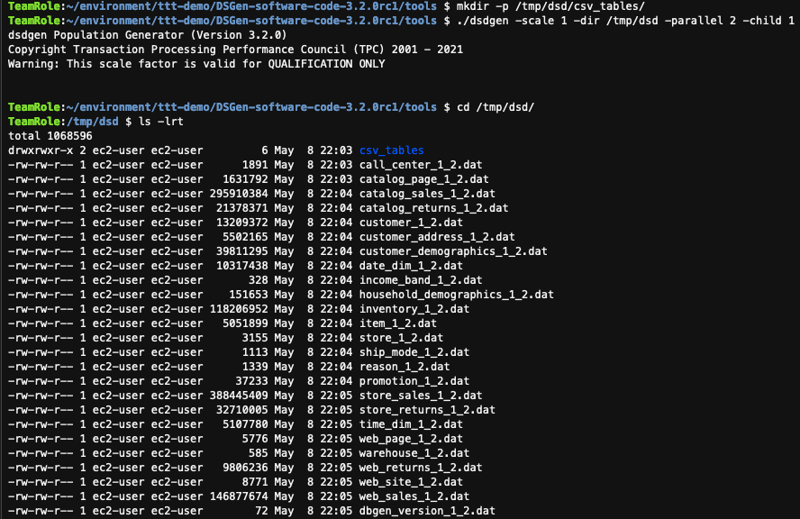
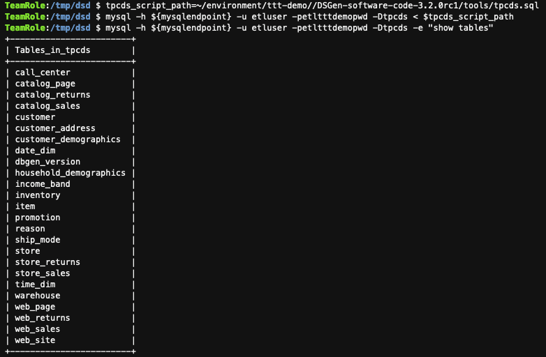
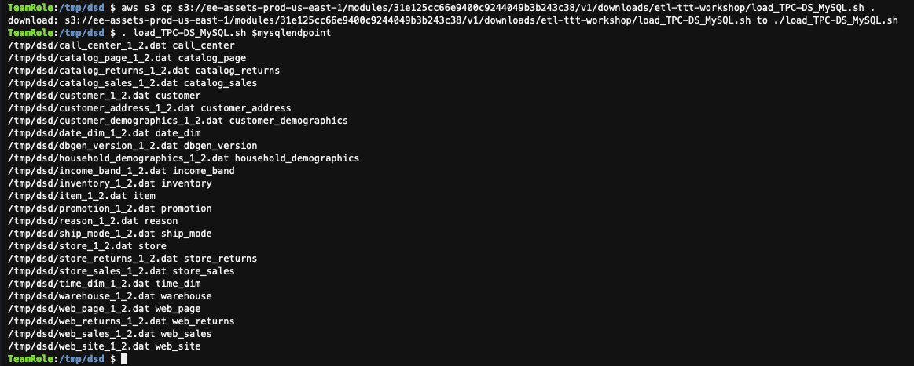
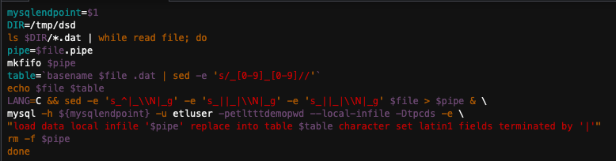
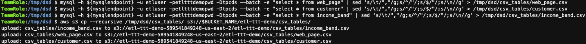

WORKING WITH TPC-DS DATA & RDS MYSQL DATABASE
Welcome to Part 1!
In the Part 1 - Working with TPC-DS Data & RDS MySQL Database - you will be installing and configuring everything that is required to prepare and load TPC-DS* data into a RDS MySQL Database Instance in order to supply the necessary dataset samples for each piece of the ETL Train The Trainer Workshop.
1. Preparing & Generating TPCDS Dataset¶
- TPC-DS - TPC data is used for a decision support benchmark. When you load this data the schema tpcds is updated with sample data. For more information about the tpcds data, see TPC-DS.
Before you can install and generate TPC-Data, you need to build the necessary folders and download the necessary files.
Run the following command to create the base level directory for the ETL Train the Trainer Workshop and to download the TCP-DS tool to your local AWS Cloud9 Enviroment:
mkdir -p ~/environment/ttt-demo
cd ~//environment/ttt-demo//
aws s3 cp s3://ee-assets-prod-us-east-1/modules/31e125cc66e9400c9244049b3b243c38/v1/downloads/etl-ttt-workshop/16d7423c-23d3-4185-8ab4-5b002ec51153-tpc-ds-tool.zip tpc-ds-tool.zip
Next, run the following commands to unzip the previous downloaded (.zip) file and get into the DSGen software's directory to install the tool.
unzip tpc-ds-tool.zip
cd DSGen-software-code-3.2.0rc1/tools/
make
head -200 tpcds.sql
The last command (head) prints out the TPC-DS sql script for the tables' schemas to validate the instalation of the tool.
Now, let's run the DSGen software to generate the sample data for all the TPC-DS tables and store the sample datasets in a temporary directory. TIP: This should take about 3 minutes to complete!
mkdir -p /tmp/dsd/csv_tables/
./dsdgen -scale 1 -dir /tmp/dsd -parallel 2 -child 1
cd /tmp/dsd/
ls -lrt

[Optional]: (Performing this optional step should allow for enough time for the previous step to complete!)
While the above command is running, you can proactively test the reacheability of your RDS MySQL Database Instance for access coming from your AWS Cloud9 Enviroment. To do that, run the following command in a NEW terminal tab (+ icon):
sudo yum -y install telnet
mysqlendpoint=$(aws cloudformation describe-stacks --query 'Stacks[*].Outputs[?OutputKey==`MySQLEndpoint`].OutputValue | [0] | [0]' --output text)
telnet $mysqlendpoint 3306
TIP: Close this additional Terminal tab once Telnet command succeed and go back to the original one!
2. Populating the Amazon RDS-MySQL Database with TPCDS Dataset¶
Once the dataset samples get generated, it is time to load the data into the RDS MySQL Database. But first, run the following commands to create the TPC-DS tables' schemas in the MySQL database:
tpcds_script_path=~/environment/ttt-demo//DSGen-software-code-3.2.0rc1/tools/tpcds.sql
mysql -h ${mysqlendpoint} -u etluser -petltttdemopwd -Dtpcds < $tpcds_script_path
mysql -h ${mysqlendpoint} -u etluser -petltttdemopwd -Dtpcds -e "show tables"
The last output should be a list of all the tables that have been created in the database.

Now, it is time to load the data into the tables. To easily do that, you can run the following commands to download and run the a Shell Script that does all the loading process into the RDS MySQL Database! TIP: This should take about 3 minutes to complete!
aws s3 cp s3://ee-assets-prod-us-east-1/modules/31e125cc66e9400c9244049b3b243c38/v1/downloads/etl-ttt-workshop/load_TPC-DS_MySQL.sh .
. load_TPC-DS_MySQL.sh $mysqlendpoint
You can see all the tables getting loaded one by one...

And here's a snippet of the Shell Script code.

NOTE: You don't have to create it but if you want just to have a look at the script, simply run the following commands:
cd /tmp/dsd/
cat load_TPC-DS_MySQL.sh
3. Unloading Tables (in CSV) from RDS MySQL Database and Uploading to S3¶
Finally, running the following commands will:
- Extract the 3 required tables (web_page, customers and income_band) from the MySQL database;
- Save these tables in the local temporary directory (in CSV format);
- And, subsequently, upload these CSV files into the Workshop's S3 Bucket's path: " .../etl-ttt-demo/csv_tables/"
mysql -h ${mysqlendpoint} -u etluser -petltttdemopwd -Dtpcds --batch -e "select * from web_page" | sed 's/\t/","/g;s/^/"/;s/$/"/;s/\n//g' > /tmp/dsd/csv_tables/web_page.csv
mysql -h ${mysqlendpoint} -u etluser -petltttdemopwd -Dtpcds --batch -e "select * from customer" | sed 's/\t/","/g;s/^/"/;s/$/"/;s/\n//g' > /tmp/dsd/csv_tables/customer.csv
mysql -h ${mysqlendpoint} -u etluser -petltttdemopwd -Dtpcds --batch -e "select * from income_band" | sed 's/\t/","/g;s/^/"/;s/$/"/;s/\n//g' > /tmp/dsd/csv_tables/income_band.csv
aws s3 cp --recursive /tmp/dsd/csv_tables/ s3://$BUCKET_NAME/etl-ttt-demo/csv_tables/

You are finished populating the RDS MySQL Database with TPC-DS sample data. Now, feel free to explore the Amazon S3 workshop's bucket again (etl-ttt-demo-${AWS_ACCOUNT_ID}-${AWS_REGION}) and check the path and files inside the etl-ttt-demo/csv_tables/ path. Once you are ready you can move on to Part 2 - AWS GLUE COMPONENTS!